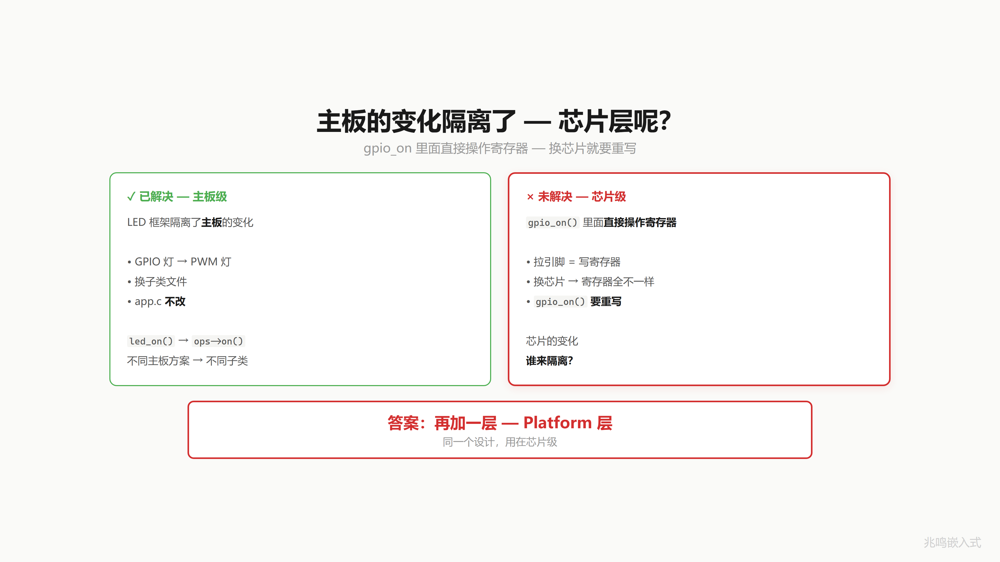
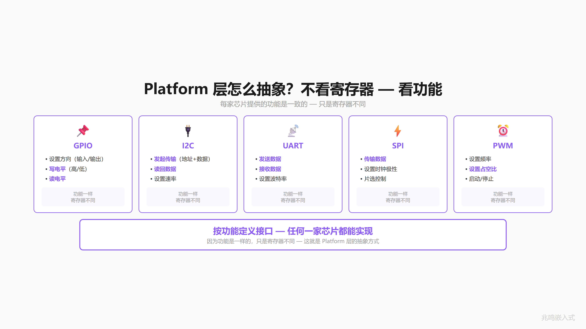
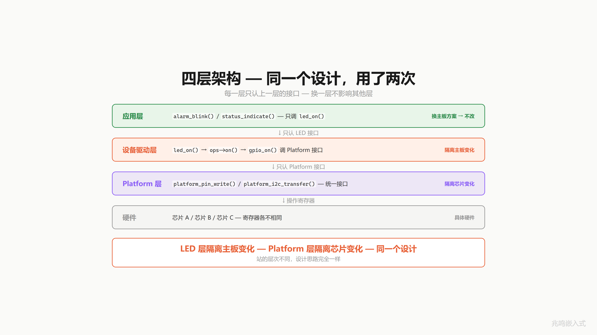
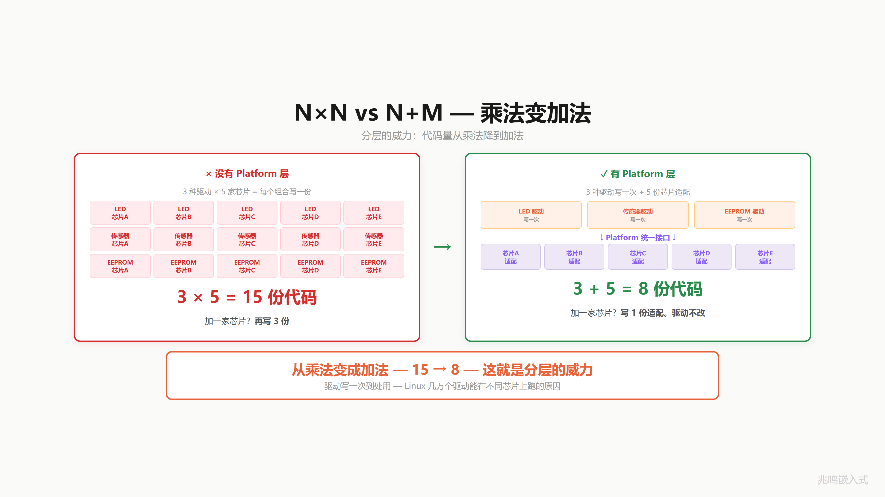
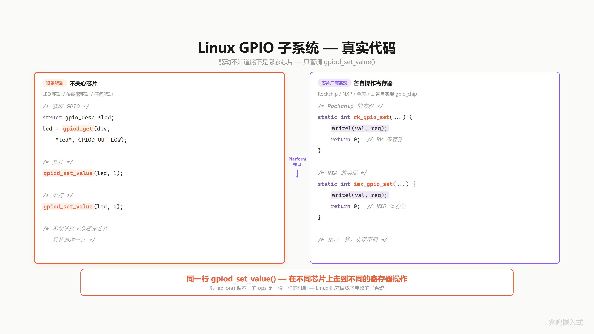
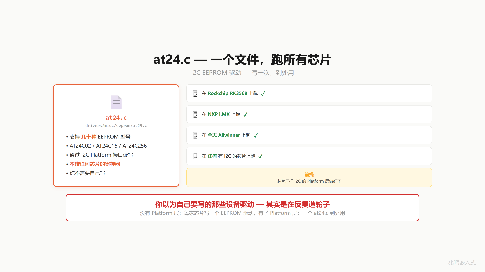
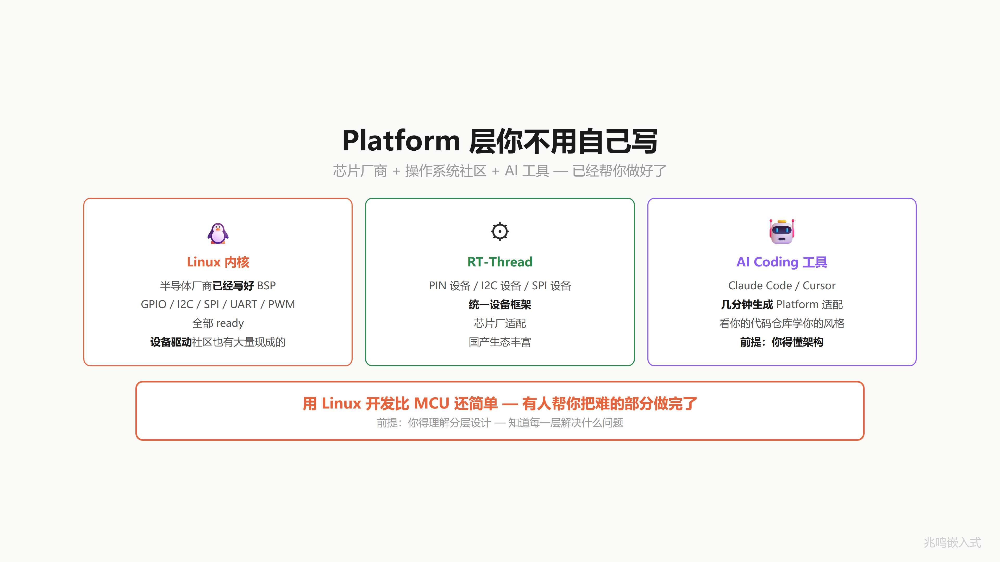

第 16 章 · 为什么 Linux 一点都不难
配套代码：oop-in-c/code/16-linux-style/
做嵌入式 11 年，我发现 Linux 一点都不难。
是有人故意让你觉得它难。
这一章给你戳穿。前提是你已经懂了 ch15 的 platform 抽象。
16.1 上一章隔离了主板，但芯片层呢
ch15 的 LED 框架隔离了主板：换主板方案，应用层 0 改动。
但 gpio_on 里头调的是 platform_gpio_write 这个封装函数，封装函数内部走 ops 分发到当前选定的 platform 实例（PC 版 / STM32 版 / Linux 版），platform 实例本身就是写寄存器、写 sysfs 的具体代码。换芯片呢？从 STM32 换到瑞萨，BSRR 寄存器换名字了，platform_ops_stm32.c 里的实现要重写。
主板的变化你的 LED 层隔离了。芯片的变化，谁来隔离？

16.2 同一招用第二次：再加一层
答案，再加一层。Platform 层。
不看寄存器，看功能。
每家芯片的 GPIO 都能干什么？设方向、写电平、读电平。功能一样，寄存器不同。
每家芯片的 I2C 都能干什么？发起传输、接收数据。功能一样，寄存器不同。
UART、SPI 也一样，每家芯片提供同一组功能（产生时序、收发字节），实现不同。
所以不看实现，按功能定义接口：
struct gpio_ops {
int (*direction_output)(struct gpio_chip *gc, unsigned int offset, int value);
int (*get)(struct gpio_chip *gc, unsigned int offset);
void (*set)(struct gpio_chip *gc, unsigned int offset, int value);
};
任何一家芯片都能实现这套接口。功能一样。

16.3 四层架构
应用层 只认 LED 接口 换主板方案不改
LED 驱动层 只认 Platform 接口 换芯片不改
Platform 层 对接具体芯片 芯片 A、B、C 各一份
具体硬件 寄存器 芯片厂卖给你的
应用层调 led_on，led 驱动层调 platform 的写引脚接口，platform 层调具体芯片的寄存器。每一层只调下一层。
LED 层隔离主板变化（同一份 led 代码，跑在 GPIO / PWM / I2C 三种灯上）。Platform 层隔离芯片变化（同一份 platform 接口，跑在不同 SoC 上）。
同一招，隔离变化，用了两次。站的层次不同，机制完全相同。

16.4 1×N vs N+M：乘法变加法
来算一笔账。
没有 platform 层：你有 3 种设备驱动（LED / sensor / motor），要跑在 5 家 SoC 上。每种驱动对每家 SoC 写一份。
driver × chip = 3 × 5 = 15 份代码
加一家 SoC？再写 3 份。15 → 18。
有 platform 层：3 种设备驱动只写一次，通过 platform 接口调用。5 家 SoC 各写一份 platform 适配。
driver + chip = 3 + 5 = 8 份代码
加一家 SoC？写 1 份 platform 适配就够。8 → 9。设备驱动一行不动。
从乘法变成了加法。3 × 5 = 15，3 + 5 = 8。

而且这 3 份设备驱动写出来，谁都能用。换芯片不影响。这就是 Linux 内核几万个驱动能在不同 SoC 上跑的原因。
16.5 Linux GPIO 子系统：真实代码
打开 Linux 内核 drivers/gpio/gpiolib.c 第 3245 行：
void gpiod_set_value(struct gpio_desc *desc, int value)
{
VALIDATE_DESC_VOID(desc);
WARN_ON(desc->gdev->chip->can_sleep);
gpiod_set_value_nocheck(desc, value);
}
EXPORT_SYMBOL_GPL(gpiod_set_value);
调到底是同一个 gpiolib.c 第 3051 行的 gpiod_set_raw_value_commit：
static void gpiod_set_raw_value_commit(struct gpio_desc *desc, bool value)
{
struct gpio_chip *gc;
gc = desc->gdev->chip;
trace_gpio_value(desc_to_gpio(desc), 0, value);
gc->set(gc, gpio_chip_hwgpio(desc), value);
}
最后一行 gc->set(gc, gpio_chip_hwgpio(desc), value)，
这就是你 ch11 / ch15 学的多态 dispatch。gc 是 struct gpio_chip *，gc->set 是函数指针。每家芯片的 set 字段指向自己的 set 实现。同一行 gc->set(...)，红灯走 vendorA 的 set，绿灯走 vendorB 的 set。
驱动作者一行不改。
/* drivers/leds/leds-gpio.c 的简化版 */
static void gpio_led_set(struct led_classdev *led_cdev,
enum led_brightness value)
{
struct gpio_led_data *led_dat =
container_of(led_cdev, struct gpio_led_data, cdev);
gpiod_set_value(led_dat->gpiod, !!value);
}
这一行 container_of 你 ch13 学过。这一行 gpiod_set_value 你刚刚见到，它内部走 gc->set 多态 dispatch 到具体 SoC。
整个 leds-gpio.c 文件 200 多行，跨所有 SoC 通吃。芯片厂的工作只是写自己那份 gc->set 实现，driver 作者一行不动。

16.6 struct gpio_chip 真身
打开 Linux 内核 include/linux/gpio/driver.h 第 415 行：
struct gpio_chip {
const char *label;
struct gpio_device *gpiodev;
struct device *parent;
struct fwnode_handle *fwnode;
struct module *owner;
int (*request)(struct gpio_chip *gc,
unsigned int offset);
void (*free)(struct gpio_chip *gc,
unsigned int offset);
int (*get_direction)(struct gpio_chip *gc,
unsigned int offset);
int (*direction_input)(struct gpio_chip *gc,
unsigned int offset);
int (*direction_output)(struct gpio_chip *gc,
unsigned int offset, int value);
int (*get)(struct gpio_chip *gc,
unsigned int offset);
int (*get_multiple)(struct gpio_chip *gc,
unsigned long *mask,
unsigned long *bits);
void (*set)(struct gpio_chip *gc,
unsigned int offset, int value);
/* ... 还有 30 多个字段 ... */
};
你看：
- 第一段是元数据（
label、parent、owner），相当于struct led_base里的name。 - 中间一大堆函数指针，就是你的
struct led_ops，只是字段更多。 - 后面还有更多字段（中断、热插拔、debug、节点管理）省略了。
这就是 ch11 你演化出来的 struct led_base + struct led_ops，放大成工业级的样子。
整个 GPIO 子系统骨架，就这一招。
16.7 file_operations：另一组同样的招
打开 Linux 内核 include/linux/fs.h 第 1852 行：
struct file_operations {
struct module *owner;
loff_t (*llseek) (struct file *, loff_t, int);
ssize_t (*read) (struct file *, char __user *, size_t, loff_t *);
ssize_t (*write) (struct file *, const char __user *, size_t, loff_t *);
__poll_t (*poll) (struct file *, struct poll_table_struct *);
long (*unlocked_ioctl) (struct file *, unsigned int, unsigned long);
int (*mmap) (struct file *, struct vm_area_struct *);
int (*open) (struct inode *, struct file *);
int (*flush) (struct file *, fl_owner_t id);
int (*release) (struct inode *, struct file *);
/* ... 30 多个字段 ... */
} __randomize_layout;
这是 Linux 字符设备 / 块设备 / 网络套接字 / 文件系统都用的统一接口。你打开一个 /dev/xxx，VFS 层调 f_op->read(file, buf, size, pos)，f_op 就是这张表，挂在每个设备实例的 struct file 里。read 字段指向哪里？指向具体设备驱动的 read 实现。
read 是必填，write 是必填，unlocked_ioctl 是选填，文件系统支持就填，不支持留 NULL，VFS 层走默认行为或返回 -ENOTTY。这就是你 ch14 学的必填 + 选填混合策略。
整个 Linux 文件子系统骨架，还是这一招。
16.7.1 三个不同子系统都用同一个 file_operations
一份 struct file_operations 实例代表一个具体设备的字符接口。Linux 内核里随便挑三个子系统看：
字符设备：随机数生成器 drivers/char/random.c
const struct file_operations random_fops = {
.read = random_read_iter,
.write = random_write_iter,
.poll = random_poll,
.unlocked_ioctl = random_ioctl,
.fasync = random_fasync,
.llseek = noop_llseek,
};
/dev/random 这个文件背后挂的就是这一张表。cat /dev/random 时 VFS 层调 f_op->read(file, buf, size, pos)，转到 random_read_iter。
块设备：通用块层 block/fops.c
const struct file_operations def_blk_fops = {
.open = blkdev_open,
.release = blkdev_release,
.read_iter = blkdev_read_iter,
.write_iter = blkdev_write_iter,
.iopoll = iocb_bio_iopoll,
.mmap = blkdev_mmap,
.fsync = blkdev_fsync,
/* ... */
};
/dev/sda 这种磁盘文件背后挂的是 def_blk_fops。
procfs：内核状态导出 fs/proc/inode.c
static const struct file_operations proc_reg_file_ops = {
.llseek = proc_reg_llseek,
.read = proc_reg_read,
.write = proc_reg_write,
.poll = proc_reg_poll,
.unlocked_ioctl = proc_reg_unlocked_ioctl,
.mmap = proc_reg_mmap,
.open = proc_reg_open,
.release = proc_reg_release,
};
/proc/cpuinfo、/proc/meminfo、/proc/version 这些路径背后挂的是 proc_reg_file_ops。
三个完全不同的子系统（随机数生成器是字符设备、磁盘是块设备、proc 是虚拟文件系统）。三张完全不同的 struct file_operations 实例。但 VFS 层调用方式都是同一行：f_op->read(file, buf, size, pos)。VFS 不知道也不需要知道背后是哪种设备。
这就是 ch15 你看到的 platform_gpio_write(...) 同一招放大到内核全局：上层只见普通封装函数，封装函数内部走 ops 分发到当前实例。同一个调用点，不同的子类，多态 dispatch 自动找对实现。
16.8 到处都是 ops 表
spi_controller .transfer / .setup / ... SPI 控制器
gpio_chip .set / .get / .request / ... GPIO 控制器
i2c_algorithm .master_xfer / ... I2C 控制器
net_device_ops .ndo_start_xmit / ... 网卡
ethtool_ops .get_link / ... 网卡管理
file_operations .read / .write / ... 字符设备 / 文件系统
inode_operations .lookup / .create / ... 文件系统节点
super_operations .alloc_inode / ... 文件系统超级块
v4l2_ioctl_ops .vidioc_querycap / ... V4L2（摄像头）
snd_pcm_ops .open / .hw_params / ... ALSA 声卡
整个 Linux 内核 4000 万行，骨架就是这几招，struct 装数据、ops 表装函数指针、不同的子类填不同的实现、container_of 反推、initcall 自注册。
读完这一章你打开内核源码，会发现 90% 的代码都是这几招的展开。

16.9 一个驱动跨所有芯片：at24 案例
Linux 内核里有一个文件 drivers/misc/eeprom/at24.c。I2C EEPROM 的驱动。一个文件，支持几十种 EEPROM 型号（AT24C01、AT24C02、24C16、24C512……），跑在任何家 SoC 上，只要芯片厂的 I2C platform 层做好了。
你不需要自己写 EEPROM 驱动。社区已经写好了。同样：I2C 扩展 IO、SPI 屏幕驱动、PWM 电机控制器，大部分都有现成的内核驱动。
你以为自己要写的那些设备驱动，多数是在反复造轮子。
没有 platform 层的时候，你给每家 SoC 写一份 EEPROM 驱动。有了 platform 层，一份 at24.c，到处用。
16.10 Platform 层你不用自己写
但 platform 层本身要不要写？
不需要。
Linux 内核：半导体厂商已经把 platform 层写好了。你买一颗 SoC，BSP 包里 GPIO / I2C / SPI / UART，全部 ready。
RT-Thread 也一样：PIN 设备、I2C 设备、SPI 设备，统一框架，芯片厂适配。
Zephyr 同样：device tree binding + driver model，芯片厂提供 gpio_dw.c / i2c_nrfx_twim.c 这种文件。
所以你的项目只需要关心：
- 设备驱动层（多数从社区拿现成的）
- 应用层（你自己写）
Platform 层？芯片厂做好了。设备驱动？大部分社区已经有了。
这就是为什么用 Linux 开发比裸机 MCU 还简单，不是 Linux 简单，是有人替你把难的部分做完了。前提是你得理解这种分层设计，知道每一层解决什么问题。

16.11 视频里没讲透的几个细节
16.11.1 trace_gpio_value 这一行干什么
第 16.5 节贴的 gpiod_set_raw_value_commit 里有一行：
trace_gpio_value(desc_to_gpio(desc), 0, value);
这是内核 ftrace 框架的 trace 埋点。打开 ftrace 之后，每一次 GPIO 写入都会被记录到 trace buffer，开发期 debug 极方便。生产构建里 trace 框架可以彻底关掉，那一行编译期消失。
这是 Linux 内核常见的“埋点 + 可关闭“模式。本书 ch14 讲 assert 时提过类似思路（assert 在 release 关掉零开销）。
16.11.2 EXPORT_SYMBOL_GPL 是什么
gpiod_set_value 函数末尾这一行：
EXPORT_SYMBOL_GPL(gpiod_set_value);
它做了两件事：
- 把
gpiod_set_value这个符号加到内核的导出符号表，让 loadable module 能链接到。 - 标记
_GPL，意思是只有 GPL 兼容许可证的 module 才能用。
这和 ch17 要讲的 initcall 机制同源，都是用 __attribute__((section())) 把信息塞进特殊段，运行时遍历。
16.11.3 RT-Thread / Zephyr 同源
打开 RT-Thread components/drivers/include/drivers/pin.h：
struct rt_pin_ops {
void (*pin_mode)(struct rt_device *device, rt_base_t pin, rt_uint8_t mode);
void (*pin_write)(struct rt_device *device, rt_base_t pin, rt_uint8_t value);
rt_int8_t (*pin_read)(struct rt_device *device, rt_base_t pin);
rt_err_t (*pin_attach_irq)(struct rt_device *device, rt_int32_t pin,
rt_uint32_t mode, void (*hdr)(void *args), void *args);
rt_err_t (*pin_detach_irq)(struct rt_device *device, rt_int32_t pin);
rt_err_t (*pin_irq_enable)(struct rt_device *device, rt_base_t pin,
rt_uint32_t enabled);
rt_base_t (*pin_get)(const char *name);
};
Zephyr 的 gpio_driver_api：
struct gpio_driver_api {
int (*pin_configure)(const struct device *port, gpio_pin_t pin, gpio_flags_t flags);
int (*port_get_raw)(const struct device *port, gpio_port_value_t *value);
int (*port_set_masked_raw)(const struct device *port, gpio_port_pins_t mask,
gpio_port_value_t value);
/* ... */
};
字段名稍有不同，机制完全一致。三个项目（Linux 内核、RT-Thread、Zephyr）都是 C 写的，都用 ops 表 + 函数指针。读完本书你打开任何一个项目源码不会陌生。
16.11.4 device tree：怎么把硬件树挂上 ops 表
这个细节本章不展开。简单说：device tree 是 Linux / Zephyr 用来描述硬件拓扑的文本文件（比如 “GPIO bank A 在地址 0x40020000，连了 16 个引脚”）。启动期 device tree 被解析成 struct device 节点，每个节点根据 compatible 字符串找到对应的驱动，挂上 ops 表。
device tree 解决的是“如何把 ops 表上挂的 chip 实例和实际硬件连起来“。本章你只要知道：注册（从静态全局 → device tree 动态）这一步，和 ops 表本身的机制无关。
16.11.5 不要把 HAL 库当 platform 层
ST 的 HAL 库（HAL_GPIO_WritePin 那一套）经常被人当作 platform 抽象的例子。其实不是。HAL 库是“绑死 STM32 一家 + 函数式包装“，HAL_GPIO_WritePin(GPIOA, ...) 里的 GPIOA 是 STM32 寄存器布局的 typedef，绑得死死的。换到瑞萨 RA 上 GPIOA 这个符号都不存在。
真正的 platform 层是抽象到“任何 SoC 都能实现“的程度。ops 表才是 platform 层的标准形态。HAL 库是 platform 层下面、绑死单家的实现，你用的时候只是 platform 层的一个具体子类。
16.11.6 AI 时代的位置
有人说 AI 时代不需要学架构了，AI 能写代码。
AI 能帮你写 gpio_on，能帮你写 platform 层适配，能从零生成一个 I2C 驱动。
但决定“这里该用 ops 表还是 if-else“、“这层该抽象到什么程度”、“这个接口够不够稳定”，这一类问题不是 AI 给你答案，是你给 AI 答案，AI 才能照你的骨架往下写。
而且 AI 是看你的代码仓库学习你的风格的。你的代码有分层，AI 输出就有分层。你的代码是一坨，AI 输出也是一坨。
这就是 AI 时代你的核心竞争力，你的架构能力，决定了 AI 能帮你放大多少。
16.12 你现在的代码在 STM32 上长什么样
ch16 是工程哲学章，没有“STM32 snippet“，你已经会的 ch15 platform_ops 就是 STM32 端的样子。
如果你想把本章 pc/ 里山寨的 gpio_chip 框架移植到 STM32 裸机上，做法是：
- 把
vendor_a_set里的 printf 替换成真实的 BSRR 写入。 - 启动期（或 ch17 的 initcall）调一次
gpiochip_add(&vendor_a_chip)。 - led 驱动一行不改。
效果就是“一份 leds-gpio.c 跑在不同 SoC 上“，这就是 Linux 内核的工作模式。
详见 oop-in-c/code/16-linux-style/stm32-snippet/。
16.13 你现在的代码在 Linux 上长什么样
本章整章就是讲 Linux 内核怎么用 OOP 风格组织自己。Linux 端的“snippet“就是内核源码本身（如何获取内核源码做本地参考见附录 D，下面是 v6.6 LTS 的关键路径）：
include/linux/gpio/driver.h第 415 行：struct gpio_chip真身drivers/gpio/gpiolib.c第 3245 行：gpiod_set_valueinclude/linux/fs.h第 1852 行：struct file_operationsinclude/linux/container_of.h第 18 行：container_of真身
读完本章 pc/ 山寨版再去读这四个内核源文件，你会发现“原来就是这一招“。
16.14 工业代码里的对照
工业控制板项目里没有 Linux 内核（裸机 + RTOS），但用的是同一套思路：
/* drivers/gpio/gpio_chip.h */
struct gpio_chip {
const char *name;
const struct gpio_chip_ops *ops;
uint32_t base;
uint32_t ngpio;
};
struct gpio_chip_ops {
int (*request)(struct gpio_chip *gc, uint32_t offset);
void (*set)(struct gpio_chip *gc, uint32_t offset, bool value);
bool (*get)(struct gpio_chip *gc, uint32_t offset);
};
5 套产品，3 款主控芯片，driver 模块（led / motor / encoder / sensor / eeprom）跨产品共享。每款芯片提供一份 gpio_chip 实现 + 注册一次 gpiochip_add。
跟 Linux 内核 90% 一致。这套架构是“工业总结的最佳工程实践“，不是某个项目独创的。
16.15 完整源码清单
把下面的代码块分别保存到对应的文件，目录结构和 oop-in-c/code/16-linux-style/pc/ 一致。make && ./demo 即可跑通。
文件 1：main.c（43 行）
启动入口。注册两家芯片，然后用同一份 leds-gpio 驱动接口分别点亮两家芯片上的灯。
/* SPDX-License-Identifier: MIT */
/*
* main.c - 山寨内核启动 + 同一份 leds-gpio 跑两家芯片
*/
#include "gpio_chip.h"
#include <stdio.h>
#include <stdlib.h>
void vendor_a_probe(void);
void vendor_b_probe(void);
void led_gpio_brightness_set(struct gpio_desc *desc, int value);
int main(void)
{
printf("=========================================\n");
printf(" ch16 - linux-style gpio subsystem\n");
printf("=========================================\n");
/* 启动期注册 chip。真实内核里走 module_init。 */
vendor_a_probe();
vendor_b_probe();
/* leds-gpio 驱动通过 chip + offset 拿到 desc */
struct gpio_desc *led_red = gpio_get_desc("vendorA-gpio", 5);
struct gpio_desc *led_green = gpio_get_desc("vendorB-gpio", 2);
printf("\n--- leds-gpio drives both chips ---\n");
led_gpio_brightness_set(led_red, 1);
led_gpio_brightness_set(led_green, 1);
led_gpio_brightness_set(led_red, 0);
led_gpio_brightness_set(led_green, 0);
printf("\n>>> same gpiod_set_value() dispatches to two vendors <<<\n");
free(led_red);
free(led_green);
printf("\nPress Enter to exit...\n");
getchar();
return 0;
}
文件 2：leds_gpio.c（24 行）
设备驱动层。它只调一行 gpiod_set_value，不知道也不需要知道底下是哪家 SoC 的 GPIO 控制器。这就是真实内核 drivers/leds/leds-gpio.c 的山寨版。
/* SPDX-License-Identifier: MIT */
/*
* leds_gpio.c - 内核里的 leds-gpio 驱动山寨版
*
* 真实内核版定义在 drivers/leds/leds-gpio.c。它就调一行 gpiod_set_value，
* 不关心底下是哪家 SoC 的 GPIO 控制器。
*
* 这就是 Linux 内核驱动作者的世界：通过 ops 表 + 抽象接口，写一份代码
* 服务所有芯片。
*/
#include "gpio_chip.h"
#include <stdio.h>
void led_gpio_brightness_set(struct gpio_desc *desc, int value)
{
/*
* 这一行内部走 gc->set ， 多态 dispatch。
* vendorA 走 vendor_a_set，vendorB 走 vendor_b_set。
* 这个驱动不知道也不需要知道。
*/
gpiod_set_value(desc, value);
}
文件 3：gpio_chip.h（49 行）
基类接口。struct gpio_chip 是每家芯片要实现的“模板“，struct gpio_desc 是 consumer 拿到的句柄。
/* SPDX-License-Identifier: MIT */
/*
* gpio_chip.h - "山寨" 一份 Linux 内核 gpio_chip
*
* 把 ch15 的 platform_ops 改个名字、改成"按 chip 分组"的形态，
* 你就得到了一份和 Linux 内核 GPIO 子系统 90% 相像的接口。
*
* 真实内核版定义在 include/linux/gpio/driver.h 第 415 行起，
* 字段比这里多得多（中断、热插拔、debug 等），但骨架就是这样。
*/
#ifndef GPIO_CHIP_H
#define GPIO_CHIP_H
#include <stdint.h>
#include <stdbool.h>
struct gpio_chip {
const char *label;
uint32_t base;
uint32_t ngpio;
int (*request)(struct gpio_chip *gc, unsigned int offset);
void (*free)(struct gpio_chip *gc, unsigned int offset);
int (*direction_output)(struct gpio_chip *gc,
unsigned int offset, int value);
int (*get)(struct gpio_chip *gc, unsigned int offset);
void (*set)(struct gpio_chip *gc, unsigned int offset, int value);
void *driver_data; /* 给具体 chip 实现挂自己的 context */
};
/* 内核态 gpio consumer 接口（简化版） */
struct gpio_desc {
struct gpio_chip *gc;
unsigned int offset;
};
void gpiod_set_value(struct gpio_desc *desc, int value);
int gpiod_get_value(struct gpio_desc *desc);
/* 注册 chip（真正内核里叫 gpiochip_add_data） */
int gpiochip_add(struct gpio_chip *gc);
/* 通过 chip + offset 拿 desc（真正内核走 device tree） */
struct gpio_desc *gpio_get_desc(const char *chip_label, unsigned int offset);
#endif /* GPIO_CHIP_H */
文件 4：gpiolib.c（66 行）
“内核“侧的注册表 + dispatch。gpiod_set_value 最后一行 desc->gc->set(...) 就是 16.5 节内核源码的山寨版。
/* SPDX-License-Identifier: MIT */
/*
* gpiolib.c - "山寨" 内核 gpiolib 的最小内核态
*
* 注册一组 gpio_chip，通过 desc 反向找到 chip，调 chip->set / chip->get。
* 真实内核版见 drivers/gpio/gpiolib.c 第 3245 行 gpiod_set_value。
*
* 内核里那段关键调用是这样：
* gpiod_set_value -> gpiod_set_value_nocheck -> gpiod_set_raw_value_commit
* -> gc->set(gc, gpio_chip_hwgpio(desc), value);
*
* 最后一行 gc->set 就是你 ch11 学的多态 dispatch。
*/
#include "gpio_chip.h"
#include <stdio.h>
#include <string.h>
#include <stdlib.h>
#define MAX_CHIPS 8
static struct gpio_chip *s_chips[MAX_CHIPS];
static int s_num_chips;
int gpiochip_add(struct gpio_chip *gc)
{
if (s_num_chips >= MAX_CHIPS)
return -1;
s_chips[s_num_chips++] = gc;
printf("[gpiolib] chip '%s' registered (base=%u, ngpio=%u)\n",
gc->label, gc->base, gc->ngpio);
return 0;
}
struct gpio_desc *gpio_get_desc(const char *chip_label, unsigned int offset)
{
for (int i = 0; i < s_num_chips; i++) {
if (strcmp(s_chips[i]->label, chip_label) == 0) {
struct gpio_desc *d = malloc(sizeof(*d));
d->gc = s_chips[i];
d->offset = offset;
return d;
}
}
return NULL;
}
void gpiod_set_value(struct gpio_desc *desc, int value)
{
if (!desc || !desc->gc)
return;
/* 这一行是 Linux 内核 drivers/gpio/gpiolib.c L3057 的山寨版：
* gc->set(gc, gpio_chip_hwgpio(desc), value);
* 把 desc->offset 当 hwgpio 直接传过去。
*/
desc->gc->set(desc->gc, desc->offset, value);
}
int gpiod_get_value(struct gpio_desc *desc)
{
if (!desc || !desc->gc)
return -1;
return desc->gc->get(desc->gc, desc->offset);
}
文件 5：gpio_vendor_a.c（68 行）
厂商 A 的 gpio_chip 实现。每家芯片厂提供一份这样的文件，内核里对应 drivers/gpio/gpio-rockchip.c / gpio-mxc.c 这一族。
/* SPDX-License-Identifier: MIT */
/*
* gpio_vendor_a.c - 厂商 A 的 gpio_chip 驱动
*
* 假装这是某家 SoC 的 GPIO 控制器实现。把 chip->set 指向自己的
* 寄存器操作。在 PC 上用 printf 模拟。
*
* 真实 Linux 内核里的等价物：drivers/gpio/gpio-mxc.c、gpio-rockchip.c
* 等等。每家芯片厂提供一份这样的文件。
*/
#include "gpio_chip.h"
#include <stdio.h>
static int vendor_a_request(struct gpio_chip *gc, unsigned int offset)
{
printf(" [vendorA] request offset=%u (write reg PORT_EN)\n",
offset);
(void)gc;
return 0;
}
static void vendor_a_free(struct gpio_chip *gc, unsigned int offset)
{
printf(" [vendorA] free offset=%u\n", offset);
(void)gc;
}
static int vendor_a_direction_output(struct gpio_chip *gc,
unsigned int offset, int value)
{
printf(" [vendorA] direction_output offset=%u (write reg DIR)\n",
offset);
(void)gc;
(void)value;
return 0;
}
static int vendor_a_get(struct gpio_chip *gc, unsigned int offset)
{
(void)gc;
(void)offset;
return 0;
}
static void vendor_a_set(struct gpio_chip *gc, unsigned int offset, int value)
{
printf(" [vendorA] set offset=%u value=%d (DR_REG <- 0x%08X)\n",
offset, value, value ? (1u << offset) : 0);
(void)gc;
}
static struct gpio_chip vendor_a_chip = {
.label = "vendorA-gpio",
.base = 0,
.ngpio = 32,
.request = vendor_a_request,
.free = vendor_a_free,
.direction_output = vendor_a_direction_output,
.get = vendor_a_get,
.set = vendor_a_set,
};
void vendor_a_probe(void)
{
gpiochip_add(&vendor_a_chip);
}
文件 6：gpio_vendor_b.c（66 行）
厂商 B 的 gpio_chip 实现。同样的接口，不同的寄存器风格（BSRR 模式，类似 STM32）。
/* SPDX-License-Identifier: MIT */
/*
* gpio_vendor_b.c - 厂商 B 的 gpio_chip 驱动
*
* 同样的接口，不同的内部实现（不同寄存器布局）。这一份是为了演示
* 同一份 gpiod_set_value 在不同芯片下走到不同实现。
*/
#include "gpio_chip.h"
#include <stdio.h>
static int vendor_b_request(struct gpio_chip *gc, unsigned int offset)
{
printf(" [vendorB] request offset=%u (clear reg LOCK)\n", offset);
(void)gc;
return 0;
}
static void vendor_b_free(struct gpio_chip *gc, unsigned int offset)
{
printf(" [vendorB] free offset=%u\n", offset);
(void)gc;
}
static int vendor_b_direction_output(struct gpio_chip *gc,
unsigned int offset, int value)
{
printf(" [vendorB] direction_output offset=%u (set reg MODE)\n",
offset);
(void)gc;
(void)value;
return 0;
}
static int vendor_b_get(struct gpio_chip *gc, unsigned int offset)
{
(void)gc;
(void)offset;
return 0;
}
static void vendor_b_set(struct gpio_chip *gc, unsigned int offset, int value)
{
/* 厂商 B 用 SET / CLR 两个寄存器（类似 STM32 BSRR） */
uint32_t reg = value ? (1u << offset) : (1u << (offset + 16));
printf(" [vendorB] set offset=%u value=%d (BSRR <- 0x%08X)\n",
offset, value, reg);
(void)gc;
}
static struct gpio_chip vendor_b_chip = {
.label = "vendorB-gpio",
.base = 32,
.ngpio = 16,
.request = vendor_b_request,
.free = vendor_b_free,
.direction_output = vendor_b_direction_output,
.get = vendor_b_get,
.set = vendor_b_set,
};
void vendor_b_probe(void)
{
gpiochip_add(&vendor_b_chip);
}
文件 7：Makefile（19 行）
# Makefile - ch16 linux-style (PC)
CC = gcc
CFLAGS = -Wall -Wextra -std=c99
TARGET = demo
SRCS = main.c gpiolib.c gpio_vendor_a.c gpio_vendor_b.c leds_gpio.c
.PHONY: all clean run
all: $(TARGET)
$(TARGET): $(SRCS)
$(CC) $(CFLAGS) -o $(TARGET) $(SRCS)
run: $(TARGET)
./$(TARGET)
clean:
rm -f $(TARGET) $(TARGET).exe
跑一遍
cd oop-in-c/code/16-linux-style/pc
make
./demo
期望输出
=========================================
ch16 - linux-style gpio subsystem
=========================================
[gpiolib] chip 'vendorA-gpio' registered (base=0, ngpio=32)
[gpiolib] chip 'vendorB-gpio' registered (base=32, ngpio=16)
--- leds-gpio drives both chips ---
[vendorA] set offset=5 value=1 (DR_REG <- 0x00000020)
[vendorB] set offset=2 value=1 (BSRR <- 0x00000004)
[vendorA] set offset=5 value=0 (DR_REG <- 0x00000000)
[vendorB] set offset=2 value=0 (BSRR <- 0x00040000)
>>> same gpiod_set_value() dispatches to two vendors <<<
led_gpio_brightness_set 这个驱动函数对两个 LED 调同一行 gpiod_set_value。红灯走 vendorA 的寄存器（DR_REG），绿灯走 vendorB 的寄存器（BSRR 风格）。驱动一行不改。
这就是 Linux 内核驱动作者每天的工作模式。
16.16 视频回放
下一章
驱动注册这一步在本章 main 里手写：vendor_a_probe(); vendor_b_probe();。Linux 内核几千个驱动是怎么注册的？也是手写一长串调用？
不是。Linux 内核的 main 函数（你叫它 start_kernel）从来不改。加一个新驱动只写一行 module_init(my_init)，启动期自动挂上来。
下一章揭穿这一招：链接器收卡片，启动时按号码拨。